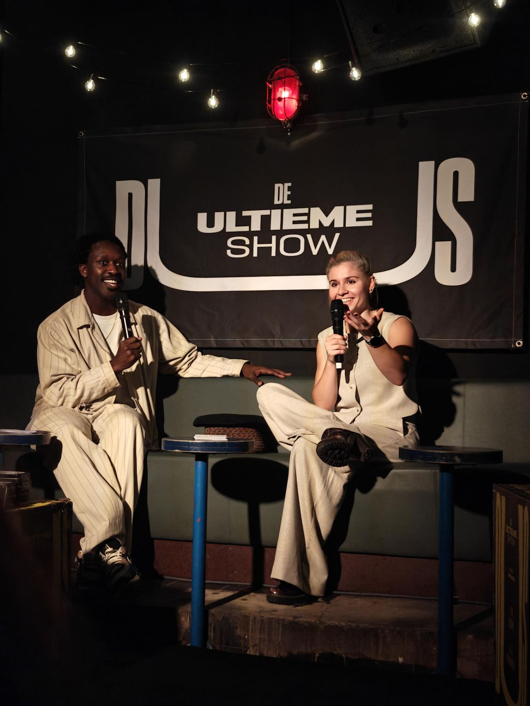
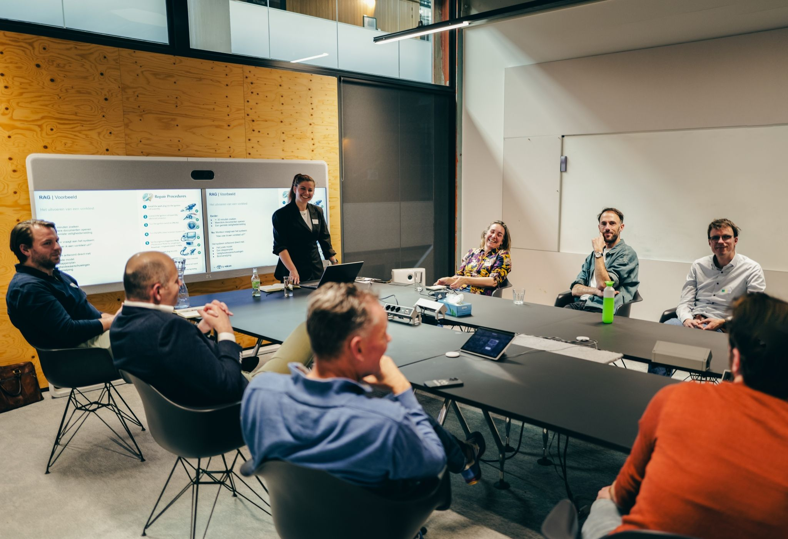
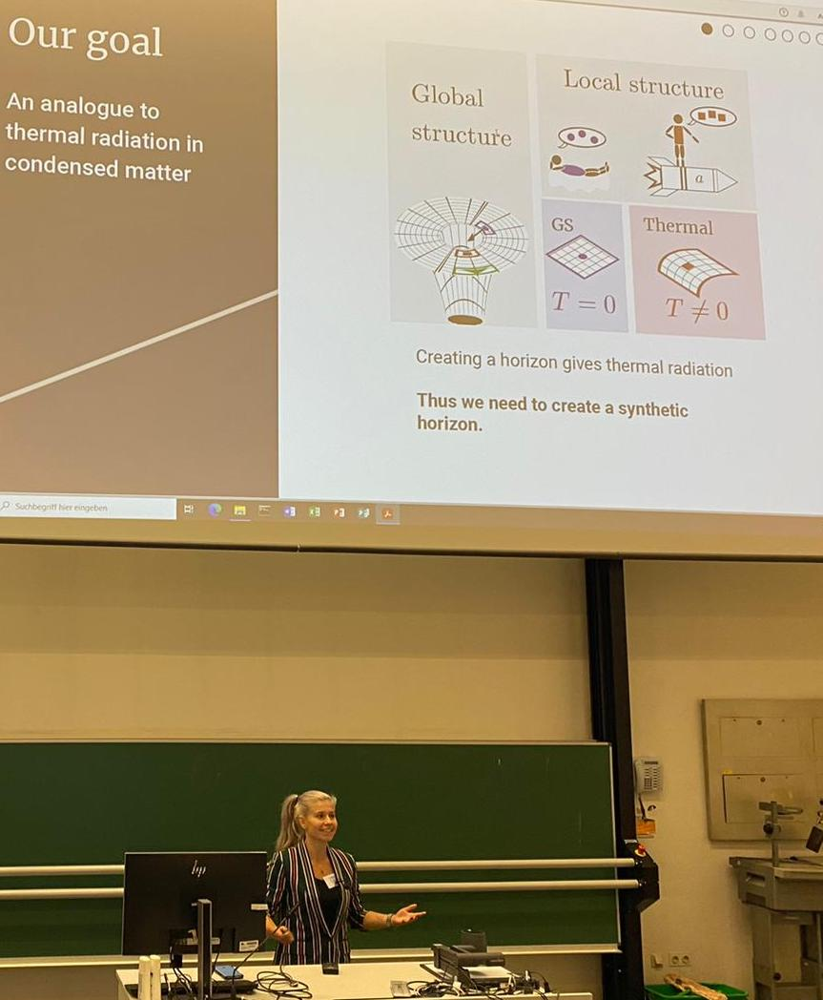

Dr. Lotte Mertens
- Principal Data Scientist at Valcon
- Postdoctoral Researcher in Theoretical Physics at IFW Dresden and the University of Amsterdam
- Independent Speaker on quantum physics, black holes and everyday physics
Talks
From public events with a diverse lineup of speakers to boardrooms and scientific conferences: I enjoy showing audiences that quantum physics and black holes are far less mysterious than they seem: much of it can be understood through the physics of everyday life, and what remains is even more surprising.
Looking for a speaker on quantum physics, black holes or everyday physics? I'm available to book as an independent speaker.
Book me
Quantum entanglement: the most mysterious connection of all
I had the honor of speaking at DUS (“De Ultieme Show”) about the most mysterious connection of all: quantum entanglement. I explained that many parts of quantum physics are actually not that weird, and that we can understand them just by looking at everyday phenomena around us. But in the end, quantum mechanics does have strange qualities that are a little bit like magic!
DUS returns every three months with a different lineup of speakers each time, so be sure to check it out!
More talks

AI Inspiration Carousel, Liander
Together with colleagues from Valcon and Accenture, a talk on accelerating the energy transition with AI, presenting our RAG-based solution for an automotive client as a concrete example of AI delivering impact today.
Superstripes 2023 — Invited speaker
A novel mechanism to create spiral domains in the charge density wave phases of tantalum disulphide.
QMA Retreat
Thermalisation by a synthetic horizon.
DICE Conference
The quantum measurement problem.

DPG Meeting of the Condensed Matter Section, Regensburg
Thermalisation by a synthetic horizon.
IFW Dresden
The inconsistency of linear dynamics and Born's rule.
Viva Fysica
A talk on the quantum measurement problem. Watch the video (Dutch)
Conferences and posters
Poster at the seminar on "Microstructure, Magnetic and Electronic Ordering: Interplay and Interactions".